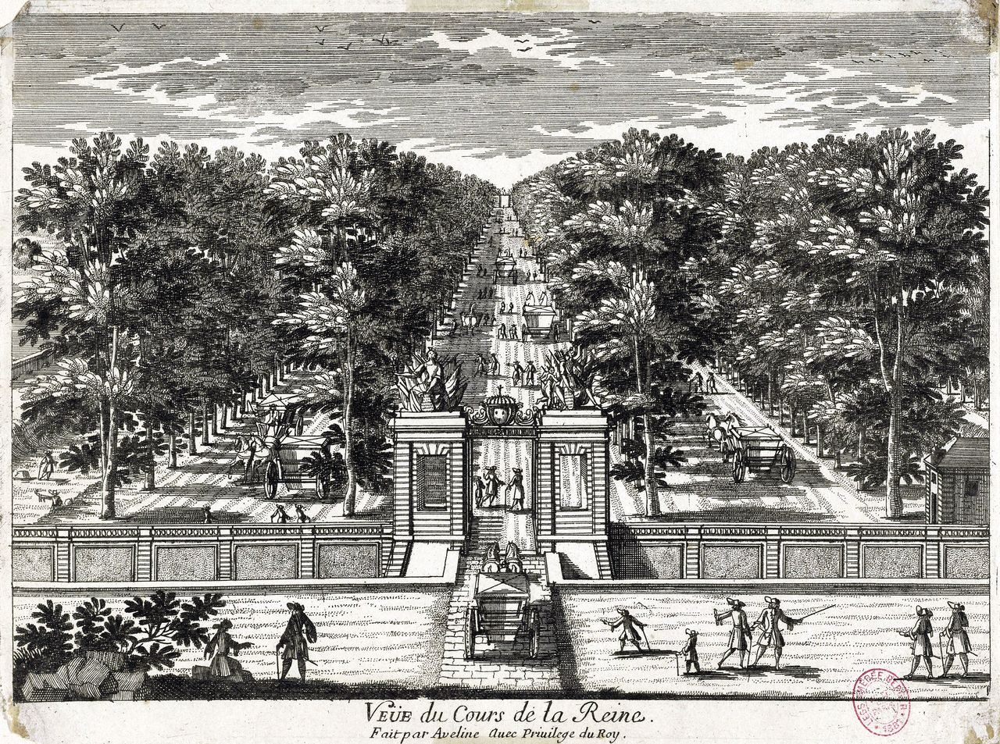
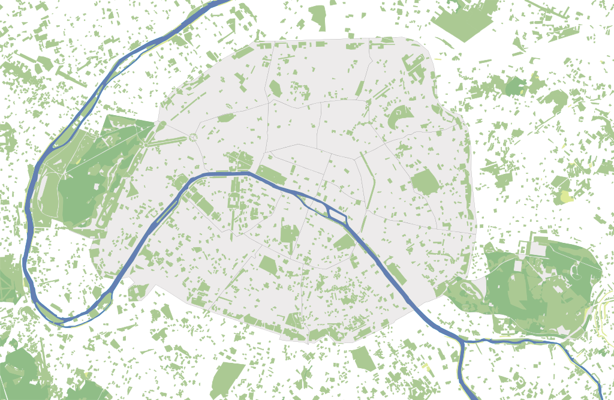

Garden Spaces
Gardens and green spaces did not feature prominently in the early modern French royal procession because they were not yet part of public life. While the natural landscape was integrated with the city through spaces such as the Cemetery of the Innocents or the banks of the Seine, these spaces were often unpleasant and utilitarian spaces that added little value to public life in Paris. In contrast, formal gardens were spaces of luxury and social performance for noble people that were situated primarily on the periphery of the city in association with noble estates, hotels, and churches (marked here in dark green). In the early modern period, French gardens were most often small, walled-off spaces that were symbolic of femininity and virginity. They were considered the domain of noblewomen and female rulers, who often held social events or staged plays in private gardens. Ornate formal gardens such as the Tuileries and the Luxembourg Gardens demonstrated the ability of humans to bring order to the disorder of the natural world. This form of domination was made accessible to female rulers and nobles.
Meanwhile, male rulers were associated with the built environment, the palace, and the city. In a similar way, the royal procession demonstrated the king’s masculine power over the city and built environment by placing him in the physical space of the street and the public square and conducting ceremonies that brought this usually chaotic space to order. Because of this dichotomy between the masculine city and the feminine garden, the formal garden was not understood as a part of public life and was ineffective as a venue for performing masculine monarchical power. When Charles IX and his predecessors entered Paris, there were no green spaces in the center of the city and no need for the king to process through one.
Month of May by Master of Claude de France, 1517; Courtesy of Morgan LibraryIt was only during the reign of Henri IV that Parisians began to think of public space as a public venue for social performance. Henri IV called for "a place to promenade for the residents of Paris who are closely pressed together in their houses," and built the Place Royale. His wife, Marie de’ Medici, constructed the Luxembourg Gardens and Cours de la Reine along the Seine, both of which became central green spaces for promenading and public spectacle. As part of Henri IV’s attempt to create a more cohesive urban fabric in the city, all of these green spaces were built at the center of the city with the intention of public use by noble people. These urban developments and those that followed set a precedent for constructing public green space in the center of the city and for viewing gardens and parks as part of the public domain. Today, public green spaces are literally and figuratively at the center of public life in Paris.
Distribution of green space in Paris, 2012; Courtesy of Eric Gaba